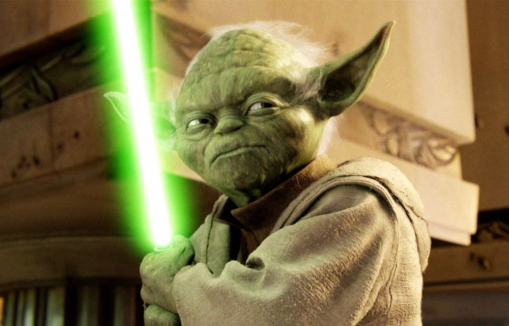
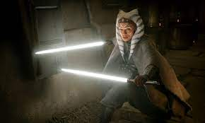

"An elegant weapon, for a more civilized age.” ~ Obi-Won Kenobi
The lightsaber, also referred to as a laser sword or space sword by those who were unfamiliar with it, was a distinctive weapon, the very image of which was inextricably bound with the mythos of the Jedi Order and their polar opposites, the Sith. The lightsaber also became synonymous with the Jedi Order's values to uphold peace and justice throughout the galaxy. This perception endured, despite the many conflicts with lightsaber-wielding Sith and Dark Jedi.
The weapon consisted of a blade of pure plasma emitted from the hilt and suspended in a force containment field. The field contained the immense heat of the plasma, protecting the wielder, and allowed the blade to keep its shape. The hilt was almost always self-fabricated by the wielder to match his or her specific needs, preferences and style. The hilt was also built similarly to his or her master's lightsaber as a mark of respect. Due to the weightlessness of plasma and the strong gyroscopic effect generated by it, lightsabers required a great deal of strength and dexterity to wield, and it was extremely difficult—and dangerous—for the untrained to attempt using. However, in the hands of an expert of the Force, the lightsaber was a weapon to be greatly respected and feared. To wield a lightsaber was to demonstrate incredible skill and confidence, as well as masterful dexterity and attunement to the Force.
Blue: Jedi Guardians are most commonly seen wielding blue lightsabers.
These individuals are highly skilled in the way of lightsabercombat,
and typically incorporate less Force attuned powers such asleaping
acrobatics and telekinesis in their technique. Known for apowerful
flurry of sword movements, blue lightsaber wielders fearlessly attack their opponents head-on, never shying away from a battle.
Green: The color green, in and of itself, represents growth and
regeneration. The individuals that brandish a green lightsaberlook upon their own life journey with that perspective. They are in syncwith their surroundings and all creatures that occupy the universe. It is very common for these individuals to also be extremely spiritual,in some cases mastering Force spirit consciousness. These Jedi strive to constantly learn and become more knowledgeable about the universe as a whole.

Yellow: associated with the Jedi Temple Guard, who, as the name implies,
were charged with the sacred task of protecting the temple of the Jedi Order on Coruscant. The Jedi Temple Guard, who wore masks to remain anonymous, carried yellow lightsaber pikes—a type of saber with along hilt and a blade emitting from each end.
Orange: This color symbolizes a Jedi Master with great knowledge and wisdom. Orange lightsabers are rare in the universe, as very few Jedi Masters even exist. If an orange lightsaber is used by a Sith Lord or apprentice, it represents great power and leadership abilities.
Purple: Purple is a blend of red and blue. Traditionally blue lightsabers were used by the Jedi,the heroes of the galaxy and red lightsabers were used by the Sith, the villains. The shading purple speaks to moral uncertainty, reconstruction, and recovery. Therefore, the individuals that used a purple lightsaber generally shared an affinity with both the Light and Dark sides of the Force.
Red: Tounderstand the role of lightsaber colors, we must first
understand where the color originates from. Color comes from lightsaber crystals. The crystal is at the core of the lightsaber and the color of the crystal determines the color of the saber. They are extremely rare and attuned to the Force. The color emitted by each crystal is determined by the personality, fighting style, and force-alignment of the wielder. This applies to most lightsaber crystals, except for red crystals.
White: Although Ahsoka’s white lightsabers have been said to symbolize
her independence from the Jedi Order, that color never reallygained
acceptance among others who followed a similar path. Thatundoubtedly
has a lot to do with the unique circumstances of these lightsabers’
creation—white crystals are rarely found in nature. It has been
reported, however, that Dok-Ondar’s Den of Antiquities, on the planet Batuu, sold white lightsaber crystals in addition to many other colors.

Black: The Darksaber is characterized by its unique black plasma blade,
which is flat and thin, shorter than the conventional saber blade, and shaped at the end into a curved, tapered point. It resembles a sword more than it does a standard lightsaber. Additionally, the Darksaber emits a higher-pitched hum than the average saber, and it sometimes emanates an electrical-like crackle when it comes into contact with another blade.